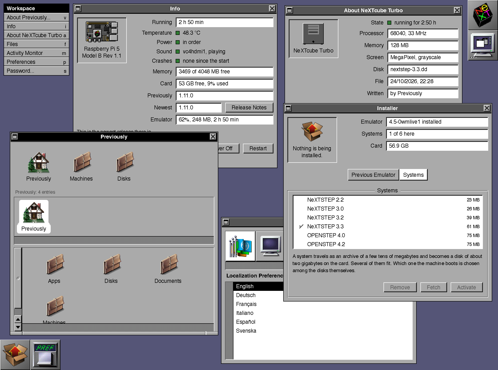

A Raspberry Pi that boosts… boots directly
into NeXTSTEP
Previously turns a Raspberry Pi 4 or 5 into a NeXT. Turn it
on and it boots direct into NeXTSTEP under the Previous emulator, set up from a
browser in an admin that looks like NeXTSTEP.
Install
Two ways to get NeXTSTEP onto your Pi
Install it onto a Pi that runs Raspberry Pi OS Lite, 64 bit.
Terminal
Write Raspberry Pi OS Lite (64-bit) with Raspberry Pi
Imager, and let it set your user, Wi-Fi and SSH.
Log in over SSH as your own user, not as root, and run
this. It asks for your password once, and a few minutes later NeXTSTEP is
on the Pi's screen.
$curl -fsSL https://previous.li/install.sh | bash
Open the address it ends with,
http://<hostname>.local:8810, in a browser on your
network.
Or write the ready image to a new card or USB stick of 8 GB or more, with nothing to type.
Download Previously for Raspberry Pi Imager and
double-click the file. It is an Imager manifest. It opens Raspberry Pi
Imager with Previously in its list, and tells the Imager how to customize
the image.
Choose your Raspberry Pi 4 or 5, Previously, and the card
or stick.
Set the hostname, a user, a password and the Wi-Fi in the
Imager's customization.
Write it, put it into the Pi and switch it on. NeXTSTEP
starts, and the admin answers at
http://<hostname>.local:8810.
What it is
The fastest way to get NeXTSTEP on your Raspberry Pi up and running
Previous is a NeXT emulator developed by Andreas Grabher.
Previously makes a Raspberry Pi boot into it, and puts the emulator's settings
into a web admin you open from any browser in your home.
0:00
Nothing but NeXTSTEP
Power the Pi on and it goes straight into NeXTSTEP, with
no boot messages, no Linux login and no desktop in between. The screen stays
with the NeXT: after a shutdown inside NeXTSTEP the machine simply boots again,
and the Pi itself is switched off from the admin.
An admin that looks like the machine
Pick one of eleven NeXT machines, with or without Turbo,
Color and NeXTdimension, and set memory, drives and ports with switches and
sliders. Drop a saved configuration onto the machine's window and it starts as
that machine.
Six systems on one card
NeXTSTEP 3.3 comes with the installation. Afterwards the
admin fetches NeXTSTEP 2.2, 3.0 and 3.2 and OPENSTEP 4.0 and 4.2 from
archive.org, 23 to 75 MB each, and boots whichever you choose; each is a 2 GB
disk that keeps what you did in it.
The admin
It looks like the machine it configures
The admin is built with great care for detail, as close
to the original as it gets: the icons, the window buttons, the grays and the
rasters are NeXTSTEP's own, down to the pixel. It speaks English, German, French,
Italian, Spanish and Swedish, just like the original.
next.local:8810

This is a recent screenshot of Previously. Not
only does it look like NeXTSTEP, it feels like it, too. You'll love this admin
right away.
Before you run it
What the install command does to your Pi, and how it comes off again
Read it first
The install command fetches the installer from
phranck/previously and runs it. The installer puts the admin tool on the Pi as a
Debian package and asks its helper, setup.py in the same
repository, for the rest.
What runs as root, and what does not
The admin runs as your user on port 8810, plain HTTP, for
your home network only; reading is open, every change needs the password. Only
the helper runs as root, and all the admin hands it is a short request of names
it looks up in its own tables, never a path or a command.
A step that fails puts itself back
Each step records how to undo itself, and a failure
reverses what was done. The terminal and the Installer window say which step
stopped and why, and Install starts it again.
Safe to run again
A second run skips what is done and replaces only an admin
tool older than the newest release. Later updates come from the admin: the Info
window updates the tool, the Installer window the emulator.
Ctrl+C, and the power
Once the admin tool is installed, the Pi does the rest by
itself; Ctrl+C or a dropped SSH session only stops you watching. After a power
cut during the install, run the install command again.
Taking it off again
Remove in the Installer window gives the console and the
boot back and removes the emulator; the disks and your configurations stay.
sudo apt purge previously removes the admin tool.
Questions
What people ask before they try it
A few things worth knowing before the card is written.
Is a Pi 4 enough, or do I need a Pi 5?
Yes. Previously is built and tested on both. The cube it
emulates out of the box is a NeXTcube Turbo with a 68040 at 33 MHz and 128 MB
of memory. Nothing in the installer turns a Pi 3 or a Pi 400 away, but those are
not what it is made on.
What does the Pi's screen show?
NeXTSTEP's own picture, 1120 by 832 pixels in four grays
on the default cube, full screen on whatever hangs on the HDMI port, with black
at the sides where your monitor is wider. The NeXT lives on that screen; the
admin in the browser only sets it up, and Grab in the admin takes a screenshot of
it when asked.
Where do keyboard and mouse go?
Into the Pi. The admin passes nothing you type into
NeXTSTEP. Inside Previous, F10 is the NeXT's power key, F12 opens the emulator's
own settings and F11 leaves full screen.
Is there sound?
Yes. Plug a USB speaker into the Pi and NeXTSTEP plays
through it. The Info window in the admin names the sound card it sees.
How do I switch it off?
In the admin's Info window, with Power Off or Restart.
Either one shuts NeXTSTEP down through its power key first and waits for it,
because cutting the power under a running NeXTSTEP damages its disk the way it
damaged a real one. Power Off in the admin's window for the emulated machine
stops only the machine, until Power On or the next boot of the Pi.
Does the emulated NeXT see my network?
Its Ethernet is switched on in the configuration the
installer writes, and the Config Editor is where you turn it off or change the
socket. Previously writes nothing beyond that, so what the NeXT reaches from
there is Previous's own default.
Does it need the internet once it runs?
No. It reaches out only when asked: to GitHub when the
Info window checks for a newer release, to archive.org when you fetch a system,
and to the Window Maker Live archive, or its copy on previous.li, when the
emulator is installed or updated.
Can I still get a shell on the Pi?
Yes. SSH stays the way in, exactly as before. The Terminal
window in the admin is that same SSH login in a browser: it asks for a Pi user's
password, not the admin's, and takes one session at a time.
What if I forget the admin's password?
Remove the password file on the Pi, over SSH. From that
moment the admin is unclaimed again, and the next change chooses a new one.
sudo rm /var/lib/previously/password
Can it share a Pi with other things?
No, better not. It takes the first console and the screen
for itself and silences the boot, so it belongs on a Pi of its own.
What does it cost, and where is the code?
Nothing, and on GitHub: the admin, the installer and the
helper in one repository, with the releases beside them. Questions and anything
that does not work go into its issues.
Is there a ready made image to write?
Yes. Since 1.11.0 every release comes with one for
Raspberry Pi Imager, see Install above.